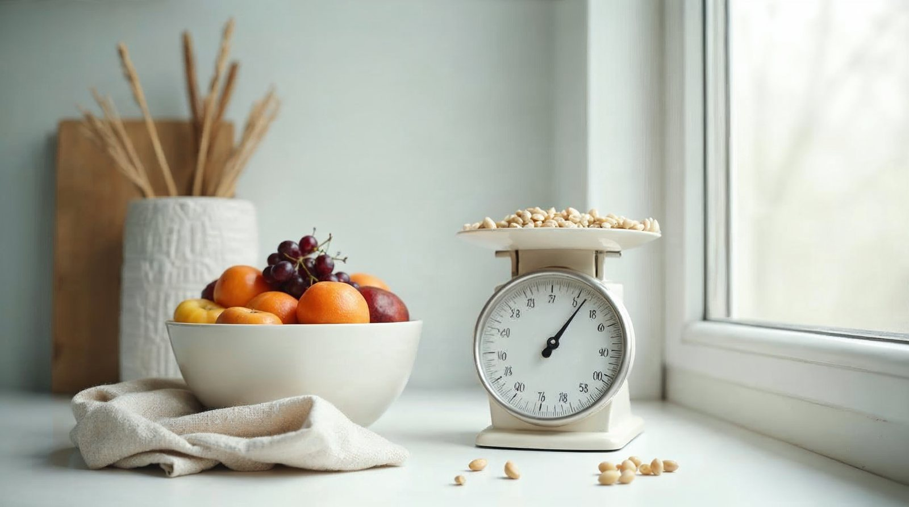
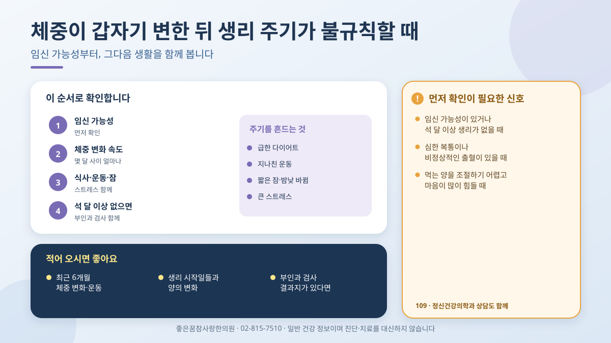

이종호 한의사 감수좋은꿈참사랑한의원 대표원장 (한의사 면허번호 19769)발행 2026-11-23 · 수정 2026-11-25
이 글의 차례
체중이 갑자기 늘거나 줄고 나서 생리 주기가 불규칙해졌다면, 먼저 임신 가능성을 확인하고 그다음 체중이 얼마나 빨리 변했는지와 식사, 운동, 잠, 스트레스를 함께 살핍니다. 석 달 이상 생리가 없으면 부인과 검사를 함께 받으시길 권합니다.
다이어트로 몇 달 사이 체중을 많이 줄였거나, 바쁜 시기에 체중이 늘고 나서 생리가 늦어지거나 건너뛰었다는 이야기를 자주 듣습니다.
생리 주기는 보통 21~35일 범위 안에서 사람마다 다르고, 한두 번 며칠 늦어지는 일은 흔히 있을 수 있습니다. 다만 체중 변화와 맞물려 몇 달째 주기가 흔들린다면 몸이 먹는 양, 움직이는 양, 잠의 변화를 따라가기 버거워하고 있다는 신호일 수 있어 순서대로 살펴봅니다.
왜 이런 불편이 생길 수 있나요
- 생리 주기는 뇌와 난소가 주고받는 신호로 조절되는데, 급하게 체중을 줄이거나 지나치게 운동하면 이 신호가 약해져 생리가 늦어지거나 멈출 수 있습니다.
- 운동량을 크게 늘리면서 먹는 양은 그대로이거나 줄인 경우에도 몸이 쓸 에너지가 모자라 주기가 흔들릴 수 있습니다.
- 체중이 빠르게 늘어난 경우에도 호르몬 균형이 달라져 주기가 흔들리는 경우가 있어 부인과 확인이 필요할 수 있습니다.
- 체중이 늘면서 여드름이나 털이 늘어나는 변화가 함께 보인다면 다낭성 난소 증후군 같은 원인 확인이 필요할 수 있어 부인과 검사를 함께 권합니다.
- 잠이 부족하거나 밤낮이 바뀐 생활, 큰 스트레스도 주기를 흔드는 요인입니다.
- 갑상선 기능 변화처럼 다른 원인이 함께 있는 경우도 있습니다.
먼저 이렇게 여쭙니다
- 몇 달 동안 체중이 얼마나 변했나요?
- 식사량이나 운동량이 크게 바뀌었나요?
- 마지막 생리는 언제였고, 평소 주기는 어땠나요?
- 잠과 스트레스에 변화가 있었나요?
- 머리카락이 많이 빠지거나 여드름, 털이 늘었나요?
- 추위를 유난히 타거나 피로가 심해졌나요?
- 임신 가능성이 있나요?
스스로 점검해 보세요
- 몇 달 사이 체중이 눈에 띄게(평소 체중의 5% 넘게) 변했다
- 하루 한 끼 이상을 자주 거르거나 밥과 빵을 거의 먹지 않는다
- 운동 시간을 갑자기 크게 늘렸다
- 손발이 차고 쉽게 지치며 추위를 더 탄다
- 생리 간격이 평소보다 일주일 넘게 달라진 달이 두 번 이상 있었다
- 먹는 것과 체중 생각 때문에 하루 대부분 마음이 무겁다
앞의 항목 가운데 여러 개가 해당하면 식사와 운동의 균형부터 다시 살펴보고, 마지막 항목이 해당한다면 정신건강의학과 상담도 함께 받아 보시길 권합니다.
일상에서 먼저 해 볼 수 있는 것
- 체중을 급하게 줄이기보다 끼니를 거르지 않는 식사로 바꾸기
- 생리 시작일과 양을 기록해 두기
- 잠드는 시각과 일어나는 시각을 일정하게 맞추기
- 무리한 운동은 강도를 조금 낮추기
- 체중은 매일보다 일주일에 한두 번 같은 조건에서 재기
다이어트 중이라면 체중 목표를 잠시 내려놓고, 세 끼를 일정한 시간에 드시는 것부터 시작해 보세요. 밥과 단백질 반찬, 채소를 적당히 나눠 담고 아침을 거르지 않는 것만으로도 하루 리듬을 잡는 데 도움이 될 수 있습니다. 체중이 늘어서 걱정인 경우에도 굶는 방식보다는 늦은 야식과 단 음료를 먼저 줄이고 잠드는 시각을 앞당기는 쪽으로 차례를 정해 봅니다.
예를 들면 이런 경우입니다
- 예를 들어 큰 행사를 앞두고 두세 달 동안 저녁을 거르며 체중을 많이 줄인 직장인이라면, 줄인 속도와 하루 식사 내용, 운동량을 함께 여쭙고 생리 날짜가 언제부터 흔들렸는지 나란히 놓고 봅니다.
- 예를 들어 수험 기간에 앉아 있는 시간이 늘고 야식이 잦아져 체중이 늘어난 학생이라면, 잠든 시각과 간식 습관을 함께 살피고 부인과 확인이 필요한지도 함께 안내합니다.
- 예를 들어 출산 뒤 수유를 마치고 체중을 서둘러 줄이려는 분이라면, 잠과 육아 부담, 식사량을 함께 살피며 무리하지 않는 속도를 함께 정합니다.

얼마나 지켜보고, 언제 상담할까요
- 생리가 예정일보다 일주일 넘게 늦어지고 임신 가능성이 있다면 먼저 임신 테스트로 확인하세요.
- 임신이 아니고 한두 번 며칠 늦어진 정도라면 식사와 잠을 바로잡으며 두세 주기 지켜볼 수 있습니다.
- 평소 규칙적이던 생리가 석 달 이상 없거나, 주기가 들쭉날쭉한 상태가 여섯 달 넘게 이어지면 부인과 검사를 받으시길 권합니다.
- 이럴 땐 바로 확인하세요. 심한 아랫배 통증이나 많은 출혈이 있거나, 임신 가능성이 있으면서 배가 아프고 출혈이 있다면 기다리지 말고 산부인과나 응급실을 찾으세요.
한의원에서 함께 살필 수 있는 경우
- 체중 변화 뒤 생리 주기가 흔들리는 경우 식사와 잠, 몸의 상태를 함께 살핍니다.
- 다이어트 뒤 기운이 없고 손발이 찬 경우 식사량과 몸의 온기를 함께 살핍니다.
- 스트레스가 큰 시기에 주기가 흔들린 경우 생활 리듬과 긴장 정도를 함께 살핍니다.
좋은꿈참사랑한의원에서는 먼저 체중 변화와 생활의 흐름을 충분히 듣고, 진맥을 기본으로 하고 필요하다고 판단될 때 인바디로 체성분을 확인하며 복진으로 몸 상태를 살핍니다. 그 결과에 따라 식사 리듬 조정, 침, 한약 상담 가운데 상태에 맞는 방법을 정하고, 부인과 검사가 필요하면 먼저 안내합니다.
귀가 전에는 주기와 체중을 함께 기록하는 방법을 알려 드립니다.
처음 오시면 최근 몇 달의 체중 흐름과 끼니, 운동, 잠을 듣고 맥부터 짚어 봅니다. 인바디 770으로 확인하는 경우에는 체중 숫자만이 아니라 근육이 함께 빠졌는지, 체지방만 늘었는지를 같이 보며 식사와 운동을 어떻게 조정할지 이야기합니다.
한약은 몸 상태를 살핀 뒤 필요하다고 판단될 때 상담하며, 체중이나 주기가 얼마 만에 달라진다고 미리 단정하지 않습니다. 임신 가능성이 있거나 피임약·호르몬제·갑상선 약 등을 드시고 있다면 상담 전에 먼저 알려 주세요. 비용이나 보험 적용은 방문 전 전화로 확인해 주세요.
이렇게 기록해 오시면 상담이 쉬워집니다
- 최근 6개월의 체중 변화와 다이어트·운동 방법
- 최근 생리 시작일들과 양의 변화
- 끼니를 거른 날과 운동한 날
- 잠든 시간, 근무 형태(교대 근무 여부)
- 부인과 검사 결과가 있다면 결과지
이런 증상은 먼저 확인이 필요합니다
- 임신 가능성이 있는 경우
- 석 달 이상 생리가 없는 경우
- 심한 복통이나 비정상적인 출혈이 있는 경우
- 피로, 추위 타기, 두근거림이 함께 심해진 경우(내과에서 갑상선 확인)
- 먹는 양을 스스로 조절하기 어렵거나 먹고 나서 일부러 토하는 경우
먹는 것과 체중 때문에 마음이 많이 힘들다면 정신건강의학과 상담도 함께 받아 보시길 권합니다. 스스로를 해치고 싶은 생각이 들거나 혼자 견디기 어렵다면 ☎ 109에 바로 연락하세요. 임신 중이거나 임신 가능성이 있다면 진료 전에 꼭 알려 주세요. 복용 중인 호르몬제나 다른 약은 처방한 의사와 상의 없이 줄이거나 끊지 않습니다.
함께 읽으면 좋은 글
- 월경 주기가 불규칙할 때 한의원에서는 무엇을 먼저 확인하나요?
- 무리하게 굶어서 뺀 체중은 왜 다시 늘기 쉬운가요?
- 체중이 늘고 피곤하고 추위를 많이 탈 때 갑상선 검사는 언제 필요한가요?

여쭙는 것
- 몇 달 동안 체중이 얼마나 변했나요?
- 식사량이나 운동량이 크게 바뀌었나요?
- 마지막 생리는 언제였고, 평소 주기는 어땠나요?
생활에서 해 볼 것
- 체중을 급하게 줄이기보다 끼니를 거르지 않는 식사로 바꾸기
- 생리 시작일과 양을 기록해 두기
- 잠드는 시각과 일어나는 시각을 일정하게 맞추기
한의원에서 함께 살필 것
- 체중 변화 뒤 생리 주기가 흔들리는 경우 식사와 잠, 몸의 상태를 함께 살핍니다.
- 다이어트 뒤 기운이 없고 손발이 찬 경우 식사량과 몸의 온기를 함께 살핍니다.
- 스트레스가 큰 시기에 주기가 흔들린 경우 생활 리듬과 긴장 정도를 함께 살핍니다.
먼저 확인이 필요한 신호
- 임신 가능성이 있는 경우
- 석 달 이상 생리가 없는 경우
- 심한 복통이나 비정상적인 출혈이 있는 경우
한눈에 보는 표
| 구분 | 핵심 |
|---|---|
| 여쭙는 것 | 몇 달 동안 체중이 얼마나 변했나요? 식사량이나 운동량이 크게 바뀌었나요? |
| 생활에서 해 볼 것 | 체중을 급하게 줄이기보다 끼니를 거르지 않는 식사로 바꾸기 생리 시작일과 양을 기록해 두기 |
| 한의원에서 함께 살필 것 | 체중 변화 뒤 생리 주기가 흔들리는 경우 식사와 잠, 몸의 상태를 함께 살핍니다. 다이어트 뒤 기운이 없고 손발이 찬 경우 식사량과 몸의 온기를 함께 살핍니다. |
| 먼저 확인이 필요한 신호 | 임신 가능성이 있는 경우 석 달 이상 생리가 없는 경우 |
자주 묻는 질문
생리가 늦으면 먼저 무엇을 확인하나요?
임신 가능성부터 확인하시고, 생리가 오래 없으면 부인과 검사를 함께 권합니다.
체중을 다시 맞추면 주기도 돌아오나요?
사람마다 다르며, 주기 기록을 보며 경과를 함께 살핍니다.
다이어트를 계속해도 되나요?
생리가 흔들릴 정도라면 속도를 늦추시길 권합니다. 끼니와 잠을 지키는 방향으로 함께 조정합니다.
인바디는 모두 재나요?
아니요. 상담 내용을 듣고 체성분을 함께 볼 필요가 있다고 판단될 때 확인합니다.
진료 시간은 어떻게 되나요?
좋은꿈참사랑한의원은 평일 09:30~20:00(점심 13:00~14:00), 토·일·공휴일 09:30~15:00에 진료합니다.
좋은꿈참사랑한의원은 재진 때 지난번 이야기부터 이어서 여쭙니다. 진료시간과 예약은 오시는 길에서 확인하세요.
어디서 상담받을 수 있나요?
좋은꿈참사랑한의원은 서울 동작구 만양로2길 2 신성빌딩 3층·5층(서울 동작구 상도동, 7호선 상도역 3번 출구 근처)에 있습니다. 한의사 3명(이종호 대표원장, 조영기 수석진료원장, 정원영 진료원장)이 진료합니다. 진료시간은 평일 09:30~20:00(점심 13:00~14:00), 토·일·공휴일 09:30~15:00이며, 방문 전 전화로 확인을 권합니다. 예약은 네이버 예약, 카카오톡 상담, 전화 02-815-7510로 받습니다.
이 글은 일반적인 건강 정보이며 개인의 진단이나 치료를 대신하지 않습니다. 증상이 있거나 복용 중인 약이 있다면 진료를 통해 확인하세요. 치료 효과는 개인마다 다를 수 있습니다.
작성 기준: 일반적으로 알려져 있는 건강 정보를 참고해 정리했습니다(대표원장 감수). 증상 기록은 1~2주 동안 하루 1회, 비슷한 시간에 적어 오시면 지난 상태와 비교하기 쉽습니다.